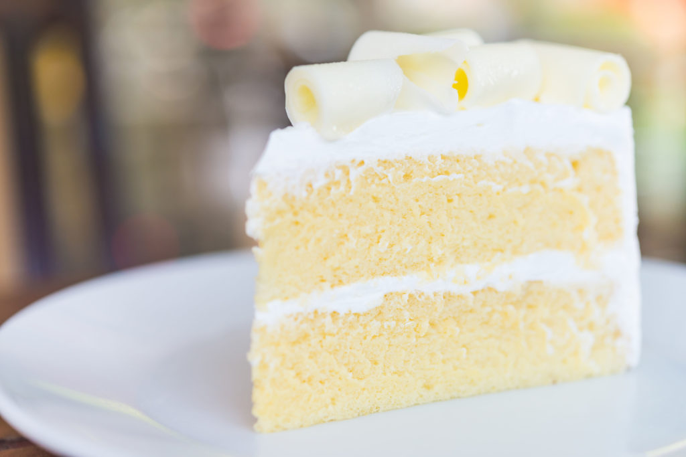

DELICIOUS CAKE
Vanilla velvet cake
Vanilla velvet is the best and popular delicious cake and it is very healthy.
Ingredients
- 340g flour
- tbsp baking powder
- 1 tsp salt
- caster sugar
- caster sugar
- 270ml milk
- 23/4 tsp vanilla extract
- 170g butter, softened
Method
- Preheat oven to 160C/Gas 3 and and spray 2 (20-cm) cake tins with cooking spray.
- Combine all dry ingredients and sift. Combine all wet ingredients and whisk to incorporate.
- In a mixer fitted with a paddle attachment, mix the sifted dry ingredients and butter. Add 1/3 of the wet ingredients and mix on medium speed for 1 minute. Scrape down the sides of the bowl and repeat this process 2 more times.
- Pour batter evenly into prepared cake tins. Bake in a preheated oven for 30 to 35 minutes. Check the centre of cakes with a toothpick for doneness. Cool.

de3licious cake